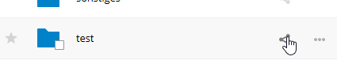

تمكين عمليات رفع مجهولة
يمكنك إنشاء أدلة التحميل الخاصة بك حتى يتمكن الآخرون من تحميل الملفات إليك دون الحاجة إلى تسجيل الدخول إلى الخادوم أو أن يكونوا من مستخدِمي نكست كلاود المسجلين. لن يُسمح لهم برؤية محتويات هذا الدليل أو إجراء أي تغييرات. يعد هذا بديلاً ممتازًا لإرسال المرفقات الكبيرة عبر البريد الإلكتروني أو باستخدام خادم FTP أو استخدام خدمات مشاركة الملفات التجارية.
الإعدَاد لإفلات ملفاتك file drop الخاصّة
انتقل إلى الملفات Files و أنشِيءْ مُجلّداً أو اختر واحداً. يجب أن يتم التحميل المجهول anonymous upload إلى:
تحقَّق من رابط المشاركة، و اسمَح بالتحرير، و اخْفِ قائمة الملفات:

يمكنك الآن إرسال الرابط إلى مجلد التحميل يدوياً؛ أو باستخدام وظيفة الإرسال في نكست كلاود إذا كان المشرف قد قام بتمكينها.
رفع الملفات
استعمال وظيفة التحميل المجهول أمرٌ سهلٌ. عندما تتلقى رابطًا لمجلد التحميل، أنقُر على الرابط، و سترى صفحة نكست كلاود مع الزر "** أنقُر للتحميل Click to upload **":

هذا يفتح لاقط الملفات File picker. و تقوم أنت بتحديد الملف أو الدليل الذي تريد تحميله. يمكنك أيضًا إفلات الملفات file drop في النافذة.
عند اكتمال التحميل، يتم سرد أسماء الملفات: